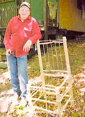
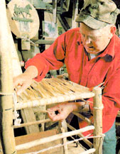
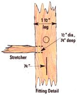
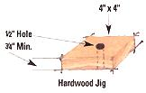
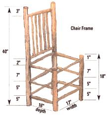

How to build a chair to be proud of.
The author (above) with his homemade birch chair before weaving its seat (below left) out of deer hide.
Making a chair is not difficult. With a little time and effort you can construct a cheap, sturdy and good-looking piece of furniture. First, locate a stand of young birch trees - birch is a sound wood as well as being aromatic and comfortable to work with. Any of the hardwoods though, like oak, ash, maple or beech, will produce a fine chair. Using a hand saw, cut off a fairly straight 12-foot-high sapling, 1" to 2" in diameter (sawing is cleaner than chopping and prevents splintering) as close to the ground as possible. Take care to keep any large limbs that measure an inch or so thick. These will be used as the stretcher pieces, or rungs, that secure the legs of the chair and set its width and depth. Next, saw the sapling into various lengths: two pieces 40" long, cut from the base end of the wood, for the back legs, and two pieces 18" long, cut from the remaining wood, for the front legs.
Afterward, use a drawknife or pocketknife to peel the bark from the wood to reveal the wet and shiny "meat" beneath. A vise can work well to secure the wood while you're pulling the drawknife, but if you don't have access to one you can always whittle away the bark using your hands and a trusted pocketknife. Just be sure to cut away from your hands. When you're finished peeling the four legs, lay them alongside one another with their bottoms lined up evenly.
Now it's time to cut and peel the stretchers. First, cut lengths from the 1" limbs you held on to earlier. These will determine the width and depth of the chair and are commonly 17" long for the width and 16" long for the depth. You'll need six of each.
When you've got the stretchers ready to go, return to the legs and, measuring from the bottom, mark the centers of the legs with a pencil so that the front and rear stretchers match up with one another. These marks represent holes to be drilled - there should he a total of 24 - and they should be approximately 5", 10" and 17" from the bottom of each chair leg. With the legs secured, drill 1/2"-diameter holes as straight as possible to a depth half the thickness of each leg (approximately 3/4" deep).
At this stage you'll notice that the holes for the 17" stretchers (width of chair) are at right angles to the 16" stretchers (depth of chair). Be sure to drill the holes higher or lower from each other so they don't run together, weakening the fitting. The only exception to this rule comes when you're drilling holes for the four seat stretchers (set approximately 17" above the floor), which you'll want level. At this point you can also cut two 17" stretchers for a backrest. Drill holes 2" above the seat stretcher and 3" down from the top of the back legs.
Materials
2 pcs hardwood 1"-2" dia. x 40"
(backless)
2 pcs hardwood 1"-2" dia. x 18"
(front legs)
6 pcs hardwood 1" dia. x 16"
(depth-stretchers)
8 pcs hardwood 1" dia. x 17"
(width-stretchers)
5 pcs hardwood 12" dia. x 19"
(backrest rounds-optional)
Seat material-hide, fabric, can vas, burlap, etc.
Wood glue and 5/8" tacks
Tools
Hand saw, drawknife or pocketknife, drill, clamps (rope, bar or pipe), scissors
After you've drilled the above holes, the chair is ready for dry assembly (see illustration). Since the stretchers are an important structural feature of the chair and demand a tight, uniform fit, you'll need to create a small jig or template to assure a rigid construction. Simply mimic the chair legs by drilling a 1/2"-diameter, 3/4"-deep hole in a 4"x4" block of hardwood, then whittle the ends of the stretchers to fit in the hole. They should be snug enough that you have to twist the wood into the hole. Whittle and test all the stretcher ends before fitting any of them into the actual leg holes. Now the chair is ready to glue and clamp.
Glue can be made by boiling deer hooves with a bit of offal mixed in. Rendered and skimmed, this was the adhesive of the Native Americans. Today this is referred to as hide glue, and it can be purchased from your local hardware merchant. Nevertheless, any high-grade wood glue will serve the purpose.
First, glue up the long back legs where there are five 17" stretchers for the legs and the backrest. I spread the adhesive liberally on the stretcher ends and drop a dab in each hole. From here, simply twist the stretchers snugly into the chair leg until they're seated and glue oozes out. You can clamp the chair with bar or pipe clamps, but I use a good old-fashioned rope clamp by looping three lengths of rope or cord-placed equally apart at the bottom, middle and top-around the assembled back. After tying the sections off snugly, insert a short stick in each rope opening and wind it until the stretchers are forced into the legs. When the joints are tight, tie off the sticks.
Assemble the front legs and stretchers using the same process, then insert the remaining six stretchers to create the chair depth and draw them tight with more rope clamps. When you're finished with the basic chair frame, and while the glue is still pliable, check to make sure the chair is square by setting it on a level floor. If all four legs don't meet on the floor, then "rack" the frame by twisting or shifting it until the legs are flush and the back is slightly angled to the rear of the seat.
When the glue has dried - it usually takes a day - you're ready to fashion a seat and treat the chair. Since I'm a hunter and I enjoy giving my furniture a rustic look, I use deer hide for the seat. If you don't have any extra hides laying around the garage - or if you can't buy any locally - fabric, canvas or even burlap will do the job.
If you do use deer hide, soak it in water and wood ashes for a few days to easily remove the hair - tanning is not necessary. After cleaning up the hide, trim the outer edge with a pair of scissors to create a circular or oblong shape. Then cut a strip approximately 1" or so wide beginning on an outer edge and spiraling round and round until the hide runs out in the center. The end result is a strip of material about 80' long.
To start the weaving process, make your leather strip into a ball and place it in a pail of water. Fasten one end of the strip with a 5/8" tack to the underside of one of the 16" seat stretchers and weave across the 17" width of the chair, working front to back, until the complete width is covered. Be sure to pull each wrap tight - the strip will stretch easily while wet so frequent dips in the water pail are recommended. Once at the back stretcher, loop the strip around and continue weaving in the opposite direction, taking the strip over and under each previously woven strip (a Popsicle-stick piece of wood helps in lifting woven strips to allow for continuous weaving). When you've finished weaving, fasten the end of the strip to the underside of the stretcher with another 1/8" tack and cut off the excess. If you have extra material left over, you can weave the backrest the same way, or you can use 1/2" vertical rounds (see illustration) instead.
At this point, place the finished chair in the sun or near a woodstove to hasten drying time. After drying, your woven seat will be tight as a drum.
A coat of varnish on the seat - top only - can protect against moisture and stretching and is optional. Fabric, canvas or burlap seats, on the other hand, will need a coat of varnish on the top. Should the seat become loose or sag from use, simply dampen the underside of the weaving and allow to dry. You can varnish the wood if you see fit, but a brushing of boiled linseed oil is more natural and produces a warm, reddish-brown finish with darker knots. It can also provide moisture that will reduce shrinkage. Now all that's left is to put your feet up and have a seat in your all-natural original homesteader's chair.
Why buy when you can Do-IT-YOURSELF. www.motherearthnews.com
|
 |
|
 |
|
 |
 |
 |